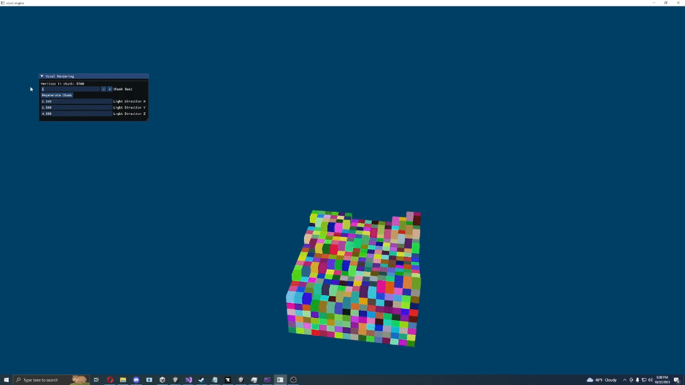

Graphics Programming
Astral - A path traced voxel engine, written in C++/OpenGL

About me
Hey there, I'm Marcus Klammt, a high school student based in Washington, USA. My passion lies in game programming, graphics programming, and reverse engineering. My journey in the world of programming began at the age of 12 when the idea of becoming a programmer sparked my curiosity.
In my early days, I delved into creating video game mods, particularly for Fortnite, and witnessed millions of downloads. As my interest evolved, I ventured into the realm of game security, focusing on .NET Obfuscation. Around the age of 14, I started my journey with C++. Soon after, I found Unity, finding it to be a captivating space where I've spent much of my time during high school.
Over the past year, my focus shifted to graphics programming. I've delved into advanced topics such as real-time ray tracing/path tracing, compute shaders, and other fascinating subjects. My standout hard skill is my ability to approach challenges with a programmer's mindset, enabling creativity in my work.
Beyond technical proficiency, I bring a set of soft skills to the table, including problem-solving, leadership, effective communication, patience, and a strong desire for continuous learning.
Thank you for taking a moment to learn a bit about me. I appreciate your time!
Game Development
Shadow Project - CO-OP Horror Shooter, made in Unity
Full CO-OP Support